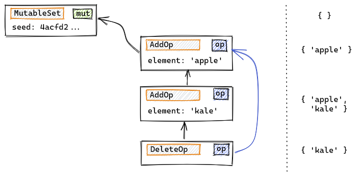

On the Internet, every ISP offers access to the entire network: the Internet Protocols enable universal connectivity. This property does not hold, however, for the information stored within each of the platforms and applications we use online. On the contrary, information can usually be accessed only through the system where it was created, limiting platform choice and application interoperability.
Building upon the Internet's universal connectivity premise, the Hyper Hyper Space project proposes a framework for universal information access. Under the proposed model, applications don't use the client-server model, with the client using APIs to perform application functions, but a fully distributed one, in which all applications use a standardized information representation based on immutable Merkle-DAGs. The framework provides building blocks for the creation of reusable open formats, from which secure distributed data structures can be derived. The end result simplifies the creation of peer-to-peer information systems and improves application interoperability.
To make these new distributed, interoperable applications universally available, a JavaScript implementation of the Hyper Hyper Space protocol stack has been adapted to run inside a modern web browser, using IndexedDB for persistence and WebRTC as transport. This enables a regular website to work as a web-based peer, creating a local database inside the browser that is then synchronized automatically using a peer-to-peer network overlay.
Information as Merkle-DAGs
Just like the Internet Protocol uses a simplistic network definition (optimistic delivery of discrete packages) to build its network interconnection capabilities, Hyper Hyper Space-based applications use a single data structure to represent information: an immutable, append-only Merkle-DAG. This is a generalization of the model used by blockchain-based cryptocurrencies, but instead of storing financial transactions, each node in the graph may contain an arbitrary application-defined JSON-like object. Objects reference each other by using their cryptographic hashes, like blocks do in a blockchain, and are authenticated using cryptographic signatures. The resulting Merkle-DAG can be synchronized accross devices and verified efficently. It forms the basis of Hyper Hyper Space's interoperability capabilities.
Data Model
There is a significant mismatch between writing to an append-only immutable DAG and the data structures an application designer may expect. In the Hyper Hyper Space data model, each object defined by the application is mapped into a JSON literal and hashed. The resulting <hash, literal> pair is then appended to the application's DAG. While primitive data types are mapped to JSON verbatim, refrences to other objects are transformed into hash-based references that form arcs in the graph:
let m = new Message();
m.text = 'hello Mom'
m.timestamp = Date.now();
m.author = ken;

When one an object is replicated from one peer to another, its references are identified and sent automatically. All objects are typed, and each application informs the set of datatypes that it will accept. Types come equipped with a validation function that will be used by the replication layer to accept or reject received additions to the local copy of the DAG.
Mutability
Mutable objects are represented using operation-based datatypes. A mutable object is appended to the DAG in a definied initial state, and later changes are represented as mutation objects that reference it. Since when replicating a mutable object all the mutations must be replicated as well, both are labelled as such in the DAG.
In the following example, the Message object created above is inserted into a MutableSet:
...
let s = new MutableSet();
s.add(m);

The created MutableSet object, that initially represents an empty set, includes a random seed in its JSON-like representation. This makes its hash c111fa… unique. Otherwise, the system would accept a single empty set object, like in the mathematical definition of set theory, where extensional equality makes all empty sets represent the same entity. As operations adding and removing elements from the set are later appended to the DAG, the hash of the set object itself remains constant and can be safely used to create references in the rest of the model. Operations will usually also include a random nonce, like the AddOp above, to make them unique.
Operations also include a prev field that references to the most recent mutations that have been accepted in the local DAG. In the following example, a series of operations on an observed-remove set have been executed serially on a peer. The vertical arrows indicate the prev relationship, while the DeleteOp object has an additional blue arrow pointing to the additions that are being cancelled:
When an object is modified concurrently by several peers, prev doesn't guarantee that all operations will reach peers in the same order. Mutable datatypes need to ensure convergence, usually by employing commutative operations, following the techniques developed for CRDTs. Below we see how two peers, Ken and Mary, have concurrently added some elements to a set. Later on a synchronization occurs, and finally Ken adds a last element:

When comparing the state of a mutable object in two different replicas, the prev relationship allows peers to quickly determine if both replicas have the same set of operations, if one replica supercedes the other, or if they are in divergent states, usually within a single round-trip.